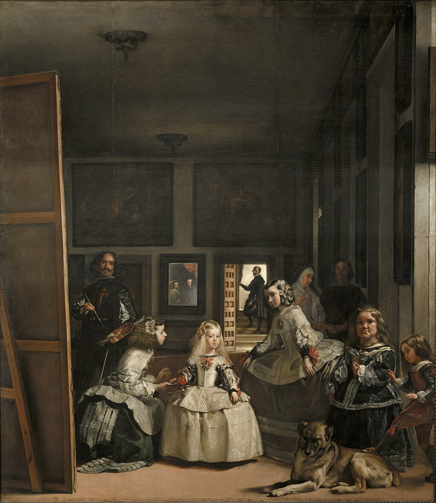

Obras Maestras del Arte

La Gioconda (Leonardo da Vinci)

La noche estrellada (Vincent van Gogh)

El grito (Edvard Munch)

Las meninas (Diego Velázquez)

La persistencia de la memoria (Salvador Dalí)